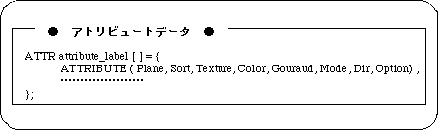

Return to previous page | Return to menu ｜ Go to next page
This chapter explains the surface attributes of polygons in Sega Saturn.
For polygons, “Sort” that indicates the reference position for determining the display order of each polygon, “front and back attributes” that specifies whether to display one side or both sides of the polygon, and a two-dimensional picture ( There is an element such as “texture” that pastes (bitmap data).
These are collectively called “polygon face attributes”.
By specifying the polygon face attribute, you can add various expressions to the polygons that were just pictures.
In the Sega Graphics Library (SGL), the ATTRIBUTE macro is used to specify the surface attributes of polygons.
In the sample programs up to this chapter, attributes have been set implicitly without explaining the details of each parameter.
However, attributes have important elements when dealing with polygons. Therefore, here we will explain in detail the meaning of each parameter of the ATTRIBUTE macro.

Note) The ATTRIBUTE macro is defined in “sl_def.h”.
The meaning of each parameter is as follows.
Plane: Indicates whether the polygon is single-sided or double-sided (front and back attributes) Sort: Indicates the representative points of the polygon positional relationship (Z sort) Texture: Indicates the texture name (No.) Color: Indicates color data Gouraud: Indicates the address of the Gouraud shading table Mode: Indicates the polygon drawing mode (various mode settings) Dir: Indicates the state of polygons and textures Option: Indicates other functions (option setting)